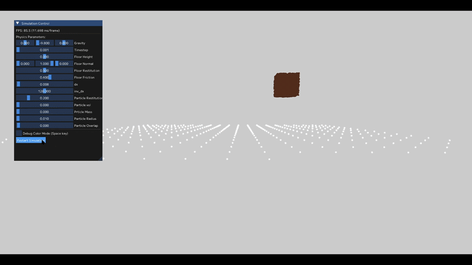

MPM Simulation using 3D Texture Grid
OpenGL / コンピュートシェーダーを用いた、GPUベースの土砂シミュレーションエンジンの開発と最適化

研究概要 (Overview)
本プロジェクトは、土砂などの粉粒体や連続体の破壊・変形をシミュレーションする手法であるMPM（Material Point Method: 物質点法）を、GPU上でリアルタイムに動作させるための独自エンジンの開発です。
MPMは「状態を保持する粒子」と「力学計算を担当するグリッド」の2つを組み合わせて計算を行いますが、粒子とグリッド間のデータ転送（P2G / G2P）における計算コストが課題となります。本研究では、OpenGLのコンピュートシェーダーを活用し、データアクセスと並列処理の最適化を図ることで、リアルタイム環境でのシミュレーションを実現しています。
技術的ハイライト (Technical Highlights)
本プロジェクトの最大の焦点は、従来の手法における計算コストと実装の複雑さを、GPUネイティブなアプローチや低レイヤのメモリ管理によって解決した点にあります。
1. グリッドの「3Dテクスチャ化」による近傍探索の排除
従来の配列や空間分割木を用いたグリッド構造を廃止し、3Dテクスチャ（Image3D）で代替しました。
これにより、空間座標をそのままテクスチャのインデックスとして利用し、imageLoad / imageStore による直接アクセスが可能になりました。近傍探索の計算処理を完全に排除し、メモリアクセスの空間的局所性を大幅に向上させています。
2. メモリアライメントの厳密な設計
C++側のデータ構造とGLSL（GPU）側でのデータマッピングにおいて、アライメントの不一致による未定義動作を防ぐため、データレイアウトを厳密に設計しました。
- 粒子データ:
高密度でメモリ効率の高いstd430レイアウトを採用し、大量の粒子データをSSBO（Shader Storage Buffer Object）にパック。 - グリッドデータ:
16バイト境界の制約があり安全性の高いstd140を採用し、用途に応じた適材適所のレイアウトを実施。
3. GPUネイティブなアルゴリズムの工夫
並列処理特有の課題解決と、外部ライブラリへの依存排除を行いました。
- 競合回避:
P2G（Particle to Grid）ステップにおいて、複数の粒子から同一グリッドへの同時書き込みが発生します。これを安全に処理するため、CAS（Compare-And-Swap）ループを用いたAtomic加算をコンピュートシェーダー内に実装し、スレッド競合を回避しています。 - SVD（特異値分解）のGLSL実装:
土砂の崩落や堆積を表現するための塑性変形・応力計算に必要なSVDを、外部ライブラリに頼らずGLSL内で直接実装しました。
パフォーマンス評価 (Performance Benchmark)
3Dテクスチャによるグリッド管理とメモリアクセスの最適化により、以下のパフォーマンスを達成しています。（※計算部分のみの純粋な性能評価）
[環境 A] ワークステーション環境
- CPU: Intel Core Ultra 7 265KF
- GPU: NVIDIA RTX A5000
- 結果:
- 約 100,000 粒子 : 60 fps (※GPU使用率4%。Vsync上限張り付き)
- 約 1,000,000 粒子 : 9 fps
[環境 B] モバイル統合グラフィックス環境
- CPU: Intel Core i7-13620H
- GPU: Intel UHD Graphics （※ディスクリートGPU未使用時）
- 結果:
- 約 10,000 粒子 : 100 fps
- 約 100,000 粒子 : 19 fps
※環境Bの検証により、専用のグラフィックボード（dGPU）を持たないノートPCの内蔵グラフィックス（iGPU）であっても、メモリ最適化によって10万粒子のシミュレーションが十分に動作することが実証されました。
今後の課題 (Future Work)
- 描画領域とシミュレーション領域の整合性向上
- SDF(Signed Distance Field) の導入による他物体との当たり判定の実装・地形の導入・レンダリングへの応用
- パフォーマンス評価の精緻化（従来手法との定量的比較の実施）
- レンダリング手法の拡張（ボリュームレンダリングなどを用いた流体・粉体表現）